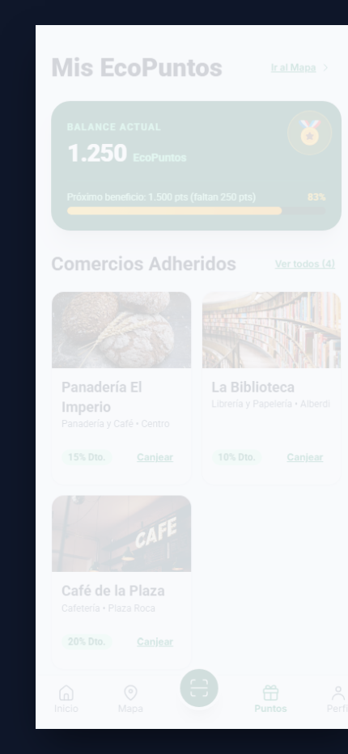
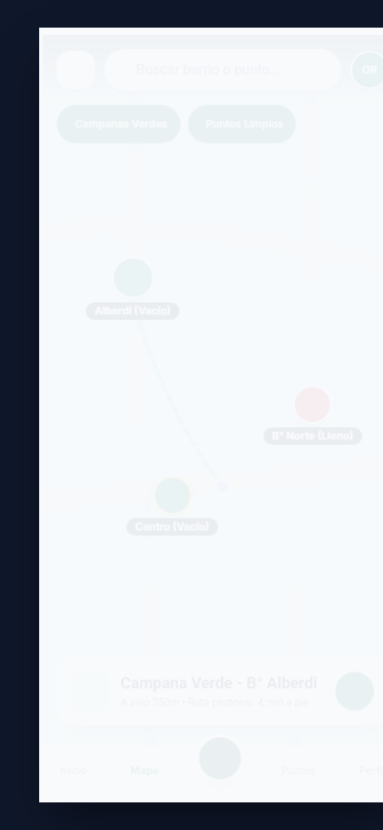
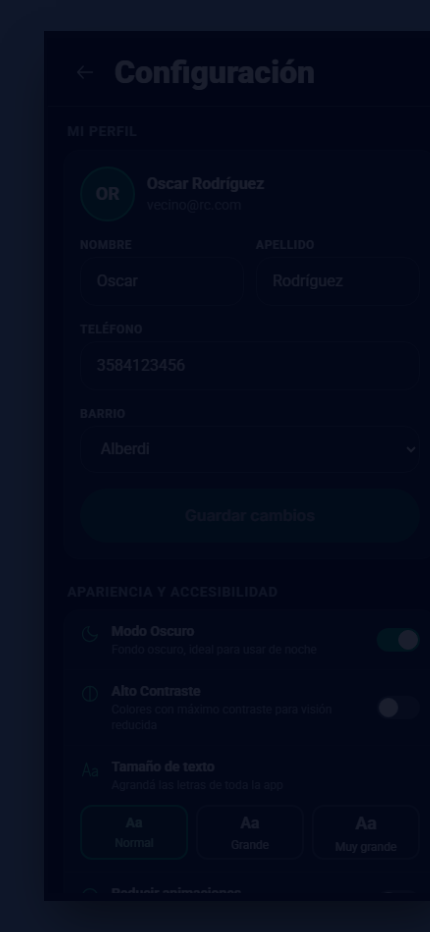
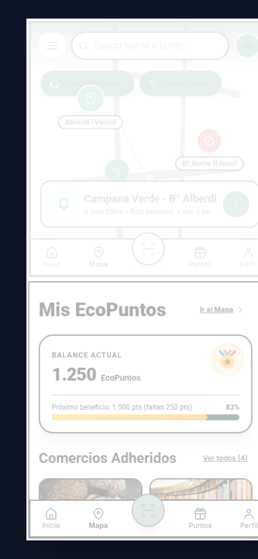
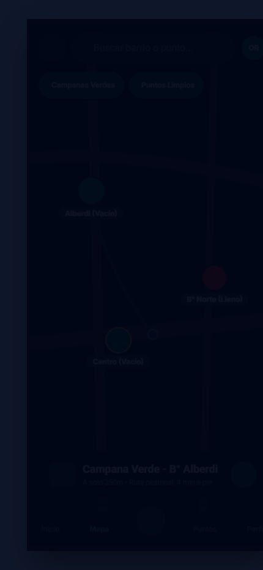

Génesis Comunitaria, Propuesta IoT y Paleta de Marca
El Problema Comunitario
El vecino camina con la bolsa de reciclables por Río Cuarto y encuentra la Campana Verde desbordada. Los folletos en PDF y Google Maps son estáticos; no informan ocupación.
Impacto: Desánimo barrial y abandono del reciclaje.
Solución: Transparencia en tiempo real (Vacío vs Lleno).
🎨 Paleta Cromática y Tokens Semánticos
#047857 · Esmeralda Base (AA 5.48:1)
Confianza institucional, ecología y estado "Disponible".
#F59E0B · Oro del Imperio
Gamificación, medallas y EcoPuntos barriales.
#FFFF00 · Contraste Puro (AAA 19.56:1)
Para usuarios con visión reducida y luz solar directa.
📡 Sensorización IoT y Convenio Municipal
Presentación formal ante la Subsecretaría de Ambiente de Río Cuarto:
Fase 1 (Software): QRs ultrarresistentes en campanas con geofencing móvil del vecino.
Fase 2 (IoT Hardware): Sensores ultrasónicos LoRaWAN miden nivel volumétrico y alertan a los camiones de recolección.
El Vecino en el Centro: DCU, Personas y Arquitectura (IA)
User Personas (Regla de los 5 Puntos)
Va caminando al trabajo. Necesita operar con una mano (zona del pulgar) y verificar en 2 segundos si su campana está vacía.
Docente jubilada con visión reducida. Requiere botones grandes de 56px, alto contraste y textos escalables al 125%.
Card Sorting y Rotulado Semántico
Eliminación de Jerga Técnica Municipal:
Jerga Descartada:
• Puntos georreferenciados RSU
• Capacidad volumétrica residual
• Redención de incentivos
✔ Rótulo Ganador:
• Mapa de Puntos Verdes
• Estado: (Vacío) / (Lleno)
• Canjear en Comercios
Sitemap Plano: Todas las pantallas accesibles en ≤ 2 clics sin callejones sin salida.
El Esqueleto: Wireframes v1 y Transición Notoria
1. Wireframe Lo-Fi Primitivo (v1)
Boceto en Gris• Cajas con cruz [X] y tipografías manuscritas para evaluar flujo sin sesgo estético.
1. Dead-end en Inicio: Exigía login obligatorio.
2. Mapa ciego: Círculos grises sin estado.
3. Drawer flotante: Conflictos con gestos swipe móvil.
Archivo: assets/figma/v1_prototipo_baja_calidad_12_pantallas.svg
2. Mutación a Software Vivo (v2)
El Salto Notorio✔ Onboarding en 3 Bloques: Explica la propuesta + botón "Explorar sin cuenta".
✔ Codificación Redundante: Color verde/rojo + Ícono + Texto (Vacío)/(Lleno).
✔ Pantalla Completa Más (#screen-mas): Sustituyó al drawer con stack nativo retrocedible.
Archivo: assets/figma/panel_transiciones_lofi_vs_hifi.svg
Psicología Visual: Gestalt, Affordance y Ley de Fitts
Leyes de la Gestalt
• Proximidad: Cada <label> a 4px de su input; grupos separados por 16px.
• Región Común: Tarjetas delimitadas para comercios e historial para no mezclar cupones.
• Patrón Z & Squint Test: Al entrecerrar los ojos, resaltan el saldo (1.250 pts) y el botón central elevado de escáner.

Affordance y Mapeo Natural
• Relieve Visual: Botones redondeados con hundimiento físico al presionar (active:scale-95).
• Ningún ícono huérfano: Siempre acompañado de su texto explicativo.
• Mapeo Natural: Los switches de tema y contraste se aplican en vivo sin requerir botón "Guardar".

Ley de Fitts y Ergonomía
• Áreas Táctiles: Objetivos de 44x44px a 56x56px para operar caminando con una mano.
• Navbar de 5 Pestañas: Comunidad, Mapa, Escáner QR elevado, Puntos y Perfil ubicados en la zona natural del pulgar.
Sistema de Diseño Atómico y los 5 Estados UI
Diseño Atómico & Auto-Layout
• Tokens: Paleta esmeralda, tipografía geométrica Inter y escala de espaciados múltiplos de 4px.
• Átomos: Botón pill (9999px), inputs con validación onBlur y chips de filtro.
• Moléculas: Tarjetas de comercios (50% imagen / 50% info) y tarjetas de publicaciones vecinales.
• Organismos: Cabecera persistente, muro de comunidad y barra de navegación inferior.

Matriz Obligatoria de los 5 Estados UI
Accesibilidad Universal: WCAG 2.2 AAA y los 3 Temas
Codificación Redundante Triple
Nunca comunicar información crítica usando únicamente el color:
1. Color: Verde (Vacío) vs Rojo (Lleno).
2. Ícono: Pin de mapa vs Ícono de alerta.
3. Texto Explícito: (Vacío) vs (Lleno) siempre legible para daltónicos.

Modo Alto Contraste AAA
Fondo negro puro (#000000), bordes blancos y acento amarillo (#FFFF00).
Ratio de Contraste: 19.56:1 a 21:1
Supera holgadamente el requisito estricto de WCAG AAA (≥ 7:1).

Modo Oscuro & Teclado 100%
• Modo Oscuro: Fondo #020617 para visualización nocturna en la vía pública.
• Navegación 100% por Teclado: Toda la app se opera sin mouse usando Tab, Enter y Escape.

Software Vivo: Demostración Interactiva en Vivo
Los 6 Pasos de la Demostración en Vivo
- Splash & Demo: Autocompletar cuenta de Oscar Rodríguez en 1 clic.
- Muro Comunidad: Filtrar publicaciones barriales y EcoEventos.
- Mapa Interactivo: Alerta preventiva en campana llena de B° Norte y ruta a Alberdi.
- Escáner QR: Selector de Vidrio (GL 70) y reasignación automática a Plaza Roca (+15 pts).
- Billetera y Canje Real: Cupón en Almacén Natural con descuento en vivo en LocalStorage.
- Prueba Mano Atada: Navegación 100% por teclado en Modo Alto Contraste AAA.
Conclusiones del Equipo
Diseñar una interfaz de usuario no es decorar pantallas. Es entender el contexto real del vecino de Río Cuarto, modelar sus modelos mentales, anticipar errores y garantizar que cualquier persona, sin importar su edad o visión, pueda transformar ambientalmente su ciudad.